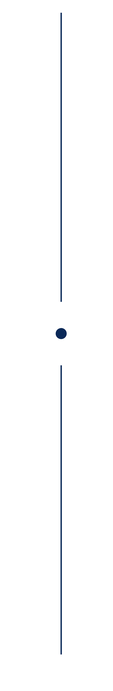

Estudante do 4° semestre de Análise e Desenvolvimento de Sistemas pela UniSenac e Técnica em Desenvolvimento de Sistemas pelo SENAC Tech. Possuo experiência prática adquirida por meio de projetos acadêmicos, projetos pessoais e programa de bolsa em desenvolvimento web. Tenho conhecimentos em desenvolvimento front-end com React, JavaScript, e TypeScript, além de desenvolvimento back-end com Python, Flask e banco de dados relacionais. Busco uma oportunidade de estágio para aplicar meus conhecimentos, desenvolver novas habilidades e contribuir com projetos reais.
- fortesvitoria@gmail.com
- 51 - 99216.7435
- Porto Alegre, RS, Brasil
- Github
- English CV
LINKS

Sobre mim
Estudante do 4° semestre de Análise e Desenvolvimento de Sistemas pela UniSenac e Técnica em Desenvolvimento de Sistemas pelo SENAC Tech. Possuo experiência prática adquirida por meio de projetos acadêmicos, projetos pessoais e programa de bolsa em desenvolvimento web. Tenho conhecimentos em desenvolvimento front-end com React, JavaScript, e TypeScript, além de desenvolvimento back-end com Python, Flask e banco de dados relacionais. Busco uma oportunidade de estágio para aplicar meus conhecimentos, desenvolver novas habilidades e contribuir com projetos reais.
FORMAÇÃO ACADÊMICA
UNI SENAC — Porto Alegre, RS, Brasil
Tecnologia em análise e desenvolvimento de sistemas (Ago 2024 – Jun 2029)
SENAC TECH — Porto Alegre, RS, Brasil
Técnico em Desenvolvimento de Sistemas (Abr 2022 – Jun 2024)
EXPERIÊNCIA PROFISSIONAL
Estagiária / Bolsista em Desenvolvimento Front-End
Compass.Uol (Maio 2022 - Set 2022)
- Desenvolvimento aplicações web com React, JavaScript, HTML;
- Aplicação de metologias ágeis em equipe (Scrum).
PROJETOS RELEVANTES
- Desenvolvimento de aplicação web com Python e Flask;
- Aplicação de conceitos de programação orientada a objetos;
- Organização de aplicação em camadas para facilitar manutenção e escalabilidade;
- Projeto acadêmico desenvolvido na disciplina de Programação orientada a objetos;
- Código: Ver no GitHub
Sistema Locker (Python/Flask)
- Desenvolvimento de interfaces da aplicação;
- Implementação de componentes reutilizáveis com React;
- Criação de layouts responsivos utilizando TailwindCSS;
- Código: Ver no GitHub
BeachGroup (React/TypeScript)
- Desenvolvimento de aplicação web como projeto final da disciplina de aplicações web; Implementação de páginas de autenticação e cadastro de usuários;
- Desenvolvimento de interfaces utilizando HTML, CSS e JavaScript;
- Código: Ver no GitHub
Kracht (PHP/HTML)
HABILIDADES
- Inglês nível B1+;
- Linguagens de programação: Python, JavaScript, TypeScript, PHP, Java;
- Front-end: React, HTML5, CSS3, Tailwind CSS, BootStrap;
- Back-end: Flask, Jinja, REST APIs;
- Databases: MySQL, PostgreSQL, Oracle;
- Tools: Git, GitHub, Figma;
- Metodologias ágeis: Scrum e Kanban.